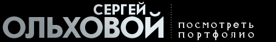

|
Графический дизайн визуальные коммуникации визуальный образ идей и посланий Графический дизайнер типографское оформление вёрстка страниц искусство рекламы Типографика каллиграфия шрифты в том числе дизайн газет журналов и книг фирменный стиль фирменные знаки логотипы брендбуки плакатная продукция Визуальные решения для упаковок продукции Задачи веб-дизайна Adobe Photoshop (работа с растровыми изображениями), Adobe Illustrator (работа с векторными изображениями), Adobe InDesign и QuarkXPress (верстка страниц) журналы, реклама, упаковка и веб-дизайн корпоративный стиль компании и его основной элемент — логотип буклеты, брошюры, календари и другая рекламная полиграфическая продукция упаковки, этикетки, обложки интернет-сайты книжные макеты и иллюстрации. Cоздание и поддержание фирменного стиля (разработка логотипов и фирменных знаков, дизайн по наружной рекламе, полиграфический дизайн: каталог, визитки, фотосъемка, верстка, предпечатная подготовка, цветокоррекция,3D моделирование + визуализация. Профессиональное владение графическими программами: Adobe Photoshop,3D Studio MAX, Adobe Illustrator, Quark XPress. Дизайн по наружной рекламе, полиграфический дизайн, разработка фирменного стиля, 3D моделирование, предпечатная подготовка. Создание и поддержание фирменного стиля, дизайн по наружной рекламе, полиграфический дизайн, разработка дизайна выставочных стендов, фотосъемка, 3D моделирование + визуализация, верстка, предпечатная подготовка, цветокоррекция. Основные обязанности: фирменный стиль, дизайн наружной рекламы, логотип, каталог, визитки, фотосъемка, 3D моделирование. Верстка, предпечатная подготовка, цветокоррекция. Дизайн и верстка плакатов, объявлений, визиток. Обработка цифровых фотографий, разработка логотипов, коллажей, плакатов. Я владею программами: Adobe Photoshop, Adobe Illustrator. Занимаюсь дизайном визиток, буклетов, каталогов, плакатов, календарей. Имею навыки верстки в программах QuarkXpress и InDesign. Не курю, в запои не ухожу.

Не люблю опаздывать и если опаздываю предпочитаю честно задержаться. Очень хочется верстать интересную научно популярную литературу и журналы, поскольку сам всей этой тематикой интересуюсь. С трепетом отношусь к орфографии и работе корректоров. Как фотограф могу сам подбирать фото для оформления, следить за надлежащим разрешением и сочетания смысла иллюстраций содержания текста к ней. Целеустремленный, исполнительный, трудолюбивый, отзывчивый, общительный, с чувством юмора. Верстка журналов (ежемесячные, глянцевые, полноцветные издания), каталогов и др. полиграфической продукции. Препресс, подготовка и вывод PS- и PDF-файлов, сдача материалов в типографии. Работаю с графическими пакетами: QuarkXPress; InDesign; Adobe Photoshop; Adobe Illistrator. У меня есть опыт изготовления журналов, книг, бланков, визиток и другой полиграфической продукции. Работа в системе MAC OS, Windows. Разработка полиграфической продукции, разработка фирменного стиля (визитки, бланки, папки, малостраничные буклеты, конверты, календари, и т. д.), создание плакатов, верстка, разработка логотипов (товарных знаков), обработка цифровых фотографий, подготовка макетов к печати и т. п. Интерес к работе, порядочность, способность работать в команде, быстрая обучаемость, желание развиваться, высокая работоспособность, коммуникабельность, творческий подход, пунктуальность, целеустремленность, ответственность. Подготовка макетов к печати, фотосъемка и обработка изображений, создание фирменного стиля и рекламных модулей, разработка многостраничных изданий. Трудолюбив, инициативен, аккуратен, ответственен, коммуникабелен, легко и быстро обучаем, творчески подхожу к поставленной задаче, способен к аналитической работе. Компьютерная графика (дизайн), наружная реклама, студия дизайна
|